Framework ágil para gestão de projetos, criado no início de 1990, seguindo regras do Manifesto Ágil, a fim de gerar valor por meio de soluções adaptativas. Possui os elementos: papéis, eventos e artefatos (papéis executam eventos e produzem artefatos). Baseado no empirismo, afirma que o conhecimento vem da experiência e tomada de decisões através de observação, e no lean thinking, concentrando-se apenas no essencial, reduzindo desperdício. Possui abordagem iterativa e incremental. Envolve coletivo, onde todos possuem conhecimentos de trabalho para compartilhar, conforme necessário. Combina quatro eventos formais para inspeção e adaptação, contidos no evento Sprint. Os 12 princípios ágeis são valor, flexibilidade, frequência, união, motivação, comunicação, funcionalidade, sustentabilidade, revisão, simplicidade, organização e autoavaliação.
Pilares (TIA)
- Transparência: Visibilidade das rotinas tanto para quem as executa, quanto para quem as recebe, através dos 3 artefatos;
- Inspeção: Artefatos e progresso às metas (goal) devem ser inspecionados com frequência e diligência, para detectar variações e problemas indesejáveis. Para isso, Scrum possui cadência através dos 5 eventos;
- Adaptação: Adaptação dos processos e materiais, caso os mesmos estejam fora dos aceites, o mais rápido possível, para minimizar novos desvios. Scrum Team com profissionais empoderados e auto-gerenciados devem adaptar-se no momento de aprendizado por meio da inspeção.
Valores
Orientam Scrum Team em trabalho, ações e comportamento, onde tais valores são aprimorados no cotidiano dos eventos e artefatos produzidos.
- Compromisso: Scrum Team compromete-se a atingir objetivos e convivência;
- Foco: Tarefas da Sprint, objetivando melhor progresso possível em direção às metas (Sprint goal);
- Abertura: Transparência de informações entre Scrum Team e seus stakeholders;
- Respeito: Ambiente de trabalho respeitado entre Scrum Team;
- Coragem: Scrum Team com coragem para resolver problemas difíceis.
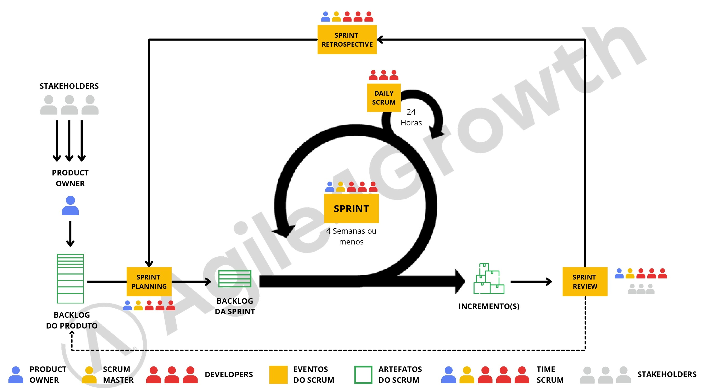
Scrum Team (papéis)
Composto de 3 a 9 Developers, além de Product Owner (PO) e Scrum Master. Não possui sub-times ou hierarquias. Focado em um objetivo de cada vez, a Meta do Produto (Product goal). Profissionais multifuncionais e autogerenciáveis (decidem internamente cada tarefa e função). Scrum Teams com integrantes além da quantidade suportada, devem ser reorganizados em vários Scrum Teams coesos, focados no mesmo Product goal, Product Backlog e PO. Scrum Team é responsável por todas atividades relacionadas ao produto, desde colaboração com stakeholder, pesquisas, manutenções, qualquer coisa que seja necessária. Todo Scrum Team é responsável por criar um Incremento valioso a cada Sprint.
- Developers: Profissionais comprometidos a criar Incremento valioso a cada Sprint, responsáveis por:
- Criar plano para Sprint, o Sprint Backlog;
- Introduzir gradualmente qualidade aderindo a uma Definição de Pronto;
- Adaptar seu plano a cada dia em direção à meta da Sprint;
- Responsabilizar-se mutuamente como profissionais.
- Product Owner (PO): Profissional responsável por maximizar o valor do produto, advindo do gerenciamento eficaz do Product Backlog realizado pelo mesmo, resultante do trabalho do Scrum Team. PO realiza comunicação direta com o cliente. Tem poder de delegar responsabilidade a outros (independentemente disso, PO ainda é o responsável). As decisões do PO são visíveis no conteúdo e ordem do Product Backlog, através do incremento inspecionável na Sprint Review. Alterações no Product Backlog precisam ser direcionadas ao, e realizadas, pelo PO. Responsável por:
- Desenvolver e comunicar explicitamente a meta do produto;
- Criar, ordenar e comunicar claramente os itens do Product Backlog;
- Garantir que o Product Backlog seja transparente, visível e compreensível, representando as necessidades dos stakeholders.
- Scrum Master: Profissional líder responsável por estabelecer e produzir Scrum (conforme Scrum Guide) ao Team e organização, sendo responsável pela eficácia do Scrum Team em tal. Responsável por:
- Treinar membros do time em autogerenciamento e cross-funcionalidade;
- Ajudar Scrum Team a se concentrar na criação de incrementos de alto valor que atendem à Definição de Pronto, provocando remoção de impedimentos ao progresso do Scrum Team;
- Garantir que todos eventos Scrum ocorram e sejam produtivos/mantidos dentro do Timebox.
O Scrum Master serve o PO de várias maneiras, incluindo:
- Ajudar encontrar técnicas para definição eficaz de meta do Produto e gerenciamento do Product Backlog;
- Ajudar Scrum Team entender a necessidade de itens do Product Backlog claros e concisos;
- Ajudar estabelecer planejamento empírico do produto para um ambiente complexo;
- Facilitar colaboração dos stakeholders.
O Scrum Master serve a organização de várias maneiras, incluindo:
- Liderar, treinar e orientar a organização na adoção do Scrum;
- Planejar e aconselhar implementações de Scrum na organização;
- Ajudar funcionários e stakeholders compreender e aplicar abordagem empírica para trabalhos complexos;
- Remover barreiras entre stakeholders e Scrum Teams.
Eventos (Events)
A Sprint é um contêiner para todos demais eventos. Cada evento é uma oportunidade formal para inspecionar e adaptar artefatos. Os eventos são usados no Scrum para criar regularidade e minimizar a necessidade de reuniões não definidas no Scrum. O ideal é que todos eventos sejam realizados no mesmo horário e local, para reduzir a complexidade.
- Sprint: Eventos de duração fixa de 1 mês ou menos (1 a 4 semanas), onde ideias são transformadas em valor. Uma nova Sprint começa imediatamente após a conclusão da anterior (loop). Todo o trabalho necessário para atingir a meta do Produto, incluindo Sprint Planning, Daily Scrums, Sprint Review e Sprint Retrospective, acontece dentro de Sprints. Durante a Sprint:
- Nenhuma mudança é feita que coloque em risco a meta da Sprint;
- A qualidade não diminui;
- O Product Backlog é refinado conforme necessário;
- O escopo pode ser esclarecido e renegociado com o PO, conforme andamento do mesmo.
Permitem previsibilidade, garantindo inspeção e adaptação do progresso em direção a Meta do Produto ao menos uma vez por mês. Quando a meta da Sprint é muito longa, a mesma pode tornar-se inválida. Sprints mais curtas podem ser empregados para gerar mais ciclos de aprendizagem e limitar riscos de custo e esforço a um período de tempo menor. Cada Sprint pode ser considerado um projeto curto. Há várias práticas para prever progresso, como burn-downs, burn-ups ou cumulative flows. Uma Sprint pode ser cancelada se a Meta da Sprint (Sprint goal) tornar-se obsoleta (apenas PO tem autoridade para tal);
- Sprint Planning: Antecede o início da Sprint, ao definir o trabalho a ser realizado na mesma (Sprint Backlog). Este plano resultante é criado pelo trabalho colaborativo de todo Scrum Team. PO garante que participantes estejam preparados para discutir os itens mais importantes do Product Backlog e como eles são mapeados para a Meta do Produto. O Scrum Team também pode convidar outras pessoas para participar da Sprint Planning para fornecer conselhos. Tópicos abordados na Sprint Planning:
- Por que essa Sprint é valiosa? PO propõe como o produto pode aumentar seu valor na Sprint atual. Todo Scrum Team então colabora para definir uma Meta da Sprint, que comunica porque a Sprint é valiosa para os stakeholders. A meta da Sprint deve ser finalizada antes do final da Sprint Planning;
- O que pode ser feito nessa Sprint? Via discussão com PO, os Developers selecionam itens do Product Backlog para incluir na Sprint atual. O Scrum Team pode refinar esses itens durante este processo;
- Como o trabalho escolhido será realizado? Para cada item do Product Backlog selecionado, os Developers planejam, somente entre si, o trabalho necessário para criar um Incremento que atenda à Definição de Pronto. Isso geralmente é feito decompondo itens do Product Backlog em itens menores, de 1 dia ou menos.
A Meta da Sprint, os itens do Product Backlog selecionados para a Sprint, mais o plano para entregá-los, são chamados juntos de Sprint Backlog e são criados na Sprint Planning. Sprint Planning tem Timebox de no máximo 8 horas para uma Sprint de 1 mês. Em Sprints mais curtas, o evento geralmente é mais curto (geralmente 2 horas de Sprint Planning para cada semana de Sprint).
- Daily Scrum: Reunião diária de 15 minutos (realizado no mesmo horário e local, todos dias úteis da Sprint) entre os Developers, com propósito de inspecionar o progresso em direção a Meta da Sprint e adaptar o Sprint Backlog conforme necessário, criando plano de ação para o próximo trabalho planejado. Se o PO ou Scrum Master estão trabalhando ativamente nos itens do Sprint Backlog, eles participam como Developers. Daily Scrum não é o único momento em que os Developers podem ajustar seu plano. Eles costumam reunir-se ao longo do dia para discussões mais detalhadas sobre adaptação ou replanejamento do resto do trabalho da Sprint. Daily Scrums melhoram comunicações, identificam impedimentos, promovem rápida tomada de decisões e consequentemente, eliminando necessidade de outras reuniões.
- Sprint Review: Sessão de trabalho para apresentação do Scrum Team, com propósito de inspecionar o resultado da Sprint e determinar adaptações futuras. O Scrum Team apresenta os resultados de seu trabalho para os principais stakeholders e o progresso em direção a Meta do Produto é discutido. Durante o evento, Scrum Team e stakeholders revisam o que foi realizado na Sprint e o que mudou em seu ambiente. O Product Backlog também pode ser ajustado para atender novas oportunidades. É o penúltimo evento da Sprint, com Timebox de no máximo 4 horas para Sprint de 1 mês. Para Sprints mais curtas, o evento geralmente é mais curto.
- Sprint Retrospective: Reunião que conclui a Sprint. Nela, Scrum Team inspeciona como foi a última Sprint em relação a indivíduos, interações, processos, ferramentas e Definição de Pronto. As suposições que os desviaram são identificadas e suas origens exploradas. Scrum Team discute o que deu certo durante a Sprint, quais problemas encontraram e como esses problemas foram (ou não) resolvidos. Scrum Team identifica mudanças mais úteis para melhorar sua eficácia e qualidade. As melhorias mais impactantes são endereçadas o mais rápido possível. Essas podem até ser adicionadas ao Sprint Backlog para próxima Sprint. Timebox de no máximo 3 horas para uma Sprint de 1 mês. Para Sprints mais curtas, o evento geralmente é mais curto.
Artefatos (Artifacts)
Representam trabalho ou valor. Projetados para maximizar transparência, para que todos que os inspecionam tenham mesma base para adaptação. Cada artefato contém um compromisso para garantir que ele forneça informações que aumentem transparência e foco contra qual o progresso pode ser medido:
- Para o Product Backlog, é a Meta do Produto (Product goal);
- Para o Sprint Backlog, é a Meta da Sprint (Sprint goal);
- Para o incremento, é a Definição de Pronto (Done).
Tais compromissos reforçam empirismo e valores para o Scrum Team e stakeholders.
-
Product Backlog: Lista ordenada e emergente do que é necessário para melhorar o produto. Única fonte de trabalho realizada pelo Scrum Team. Os itens do Product Backlog aptos a ser realizados pelo Scrum Team na Sprint são considerados preparados para seleção no evento Sprint Planning. Eles geralmente adquirem esse grau de transparência após atividades de refinamento. O Product Backlog refinement é o ato de quebrar e incluir definição adicional aos itens do Product Backlog para ter itens menores e mais precisos. Esta é uma atividade contínua para adicionar detalhes e ordem. Os Developers que farão o trabalho são responsáveis pelo dimensionamento. O PO pode influenciar os Developers, ajudando-os a entender e selecionar trade-offs (trocas de itens).
Compromisso: Meta do Produto descreve estado futuro do produto, foco para Scrum Team planejar. A Meta do produto está no Product Backlog. O restante do Product Backlog define "o que" cumprirá tal Meta do Produto. Um produto é um veículo para entregar valor. Tem limite claro, stakeholders conhecidos, usuários/clientes bem definidos. Um produto pode ser um serviço, um produto físico ou algo abstrato. A Meta do Produto é o objetivo de longo prazo para Scrum Team. Eles devem cumprir (ou abandonar) um objetivo antes de assumir o próximo. Exemplo product goal: "Criar plataforma de e-commerce confiável e fácil de usar, que permita aos usuários buscar, comparar e comprar produtos de maneira intuitiva, com experiência de compra personalizada e suporte ao cliente em tempo real, garantindo entrega rápida e segura dos produtos". Abaixo, modelo de exemplo de product backlog;
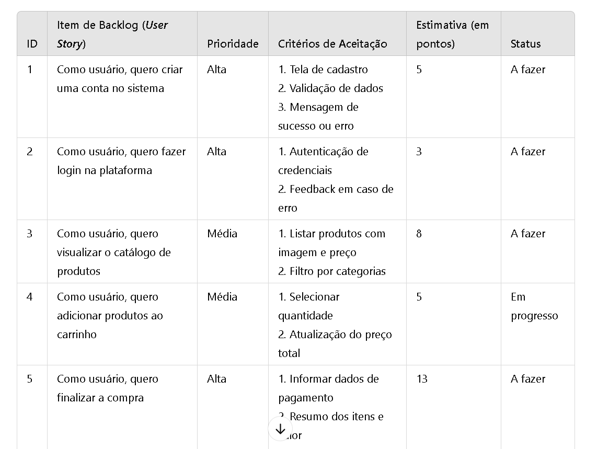
-
Sprint Backlog: Plano feito por, e para, Developers, composto pela Meta da Sprint (por que), conjunto de itens do Product Backlog selecionados para Sprint (o que), além de plano de ação para entregar o Incremento (como). É uma imagem visível, em tempo real, do trabalho que os Developers planejam realizar durante a Sprint para atingir a Meta da Sprint. Consequentemente, o Sprint Backlog é atualizado ao longo da Sprint conforme necessário. Deve ter detalhes suficientes para que eles possam inspecionar seu progresso na Daily Scrum.
Compromisso: Meta da Sprint é o único objetivo da Sprint. Embora essa seja um compromisso dos Developers, a mesma fornece flexibilidade em termos do trabalho exato necessário para alcançá-la. A Meta da Sprint é criada durante Sprint Planning e então adicionada ao Sprint Backlog. Conforme Developers trabalham durante a Sprint, eles mantêm a Meta da Sprint em mente. Se o resultado for diferente do esperado, eles colaboram com o PO para negociar o escopo do Sprint Backlog dentro da Sprint, sem afetar a Meta da Sprint. Exemplo Sprint goal: "Permitir que usuários adicionem e visualizem produtos no carrinho de compras, com cálculos precisos de preço e quantidade, para facilitar processo de checkout". Abaixo, modelo de exemplo de Sprint backlog;
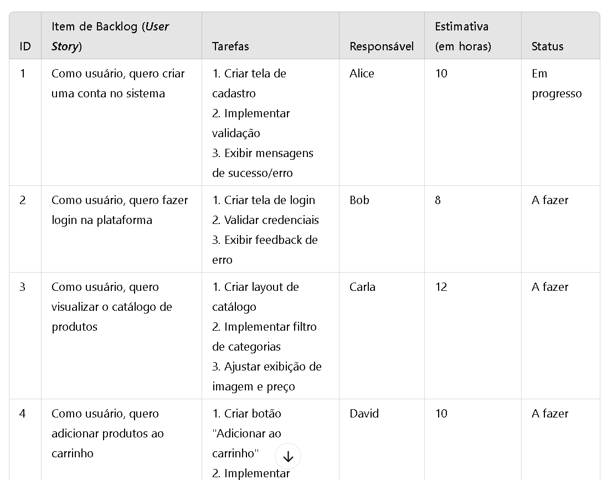
Product backlog -> Sprint backlog: Elencar epics e user stories, com maior prioridade e valor, para uso em Sprint, elencando profissionais responsáveis, como no exemplo abaixo, aplicando-as no Scrum board e event timeline;
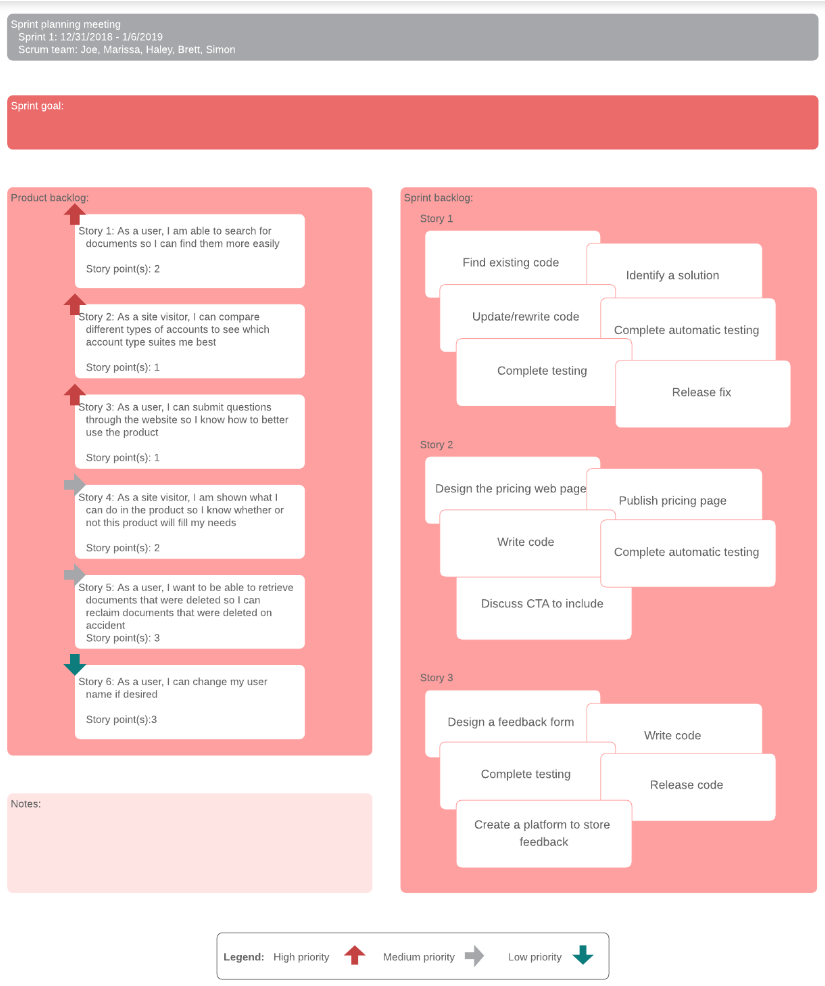
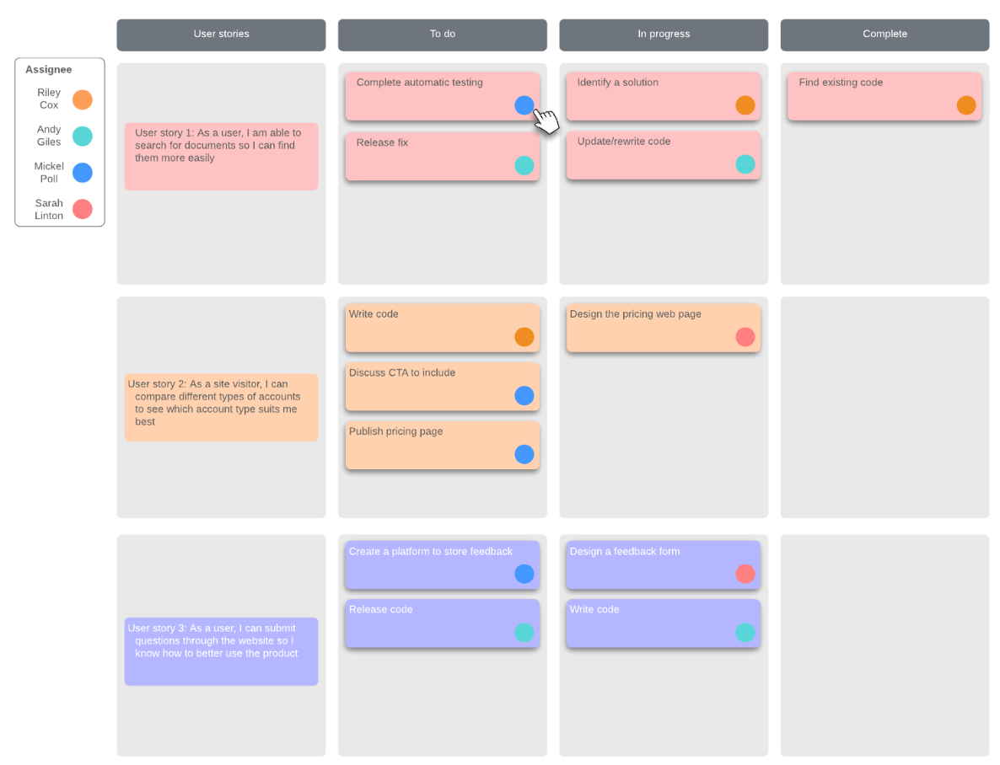
-
Incremento: Resultado concreto em direção a Meta do produto, fornecendo valor. Cada incremento é adicionado a todos demais anteriores e completamente verificado, garantindo que todos funcionem juntos. Vários incrementos podem ser criados em uma Sprint. A soma dos incrementos é apresentada na Sprint Review. Contudo, um incremento pode ser entregue aos stakeholders antes do final da Sprint. A Sprint Review nunca deve ser considerada um marco para liberar valor. O trabalho não pode ser considerado parte de um incremento, a menos que atenda a Definição de Pronto.
Compromisso: Definição de Pronto (Definition of Done ou DoD) é descrição formal do estado do Incremento quando ela atende às medidas de qualidade exigidas ao produto. No momento em que um item do Product Backlog atende a Definição de Pronto, um incremento nasce. Se um item do Product Backlog não atender à Definição de Pronto, ele não poderá ser liberado ou apresentado na Sprint Review. Em vez disso, ele retorna ao Product Backlog para consideração futura. Se a Definição de Pronto para um incremento faz parte dos padrões da organização, todos os Scrum Teams devem segui-la como mínimo. Se não for um padrão organizacional, o Scrum Team deve criar uma Definição de Pronto apropriada para o produto. Os Developers devem estar em conformidade com a Definição de Pronto. Se houver vários Scrum Teams trabalhando juntos em um produto, eles devem definir e cumprir mutuamente a mesma Definição de Pronto. Resumidamente, Definição de Pronto é lista de critérios que precisam ser atendidos para que item de backlog seja considerado concluído. Tal definição é fundamental para garantir qualidade e consistência das entregas, evitando ambiguidades sobre o que significa um trabalho "completo". Abaixo, exemplo de modelo de Definição de Pronto.
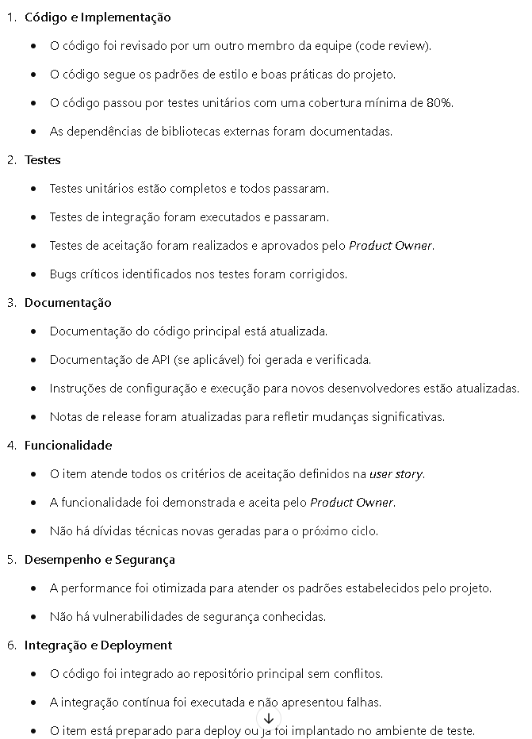
Scrum em projetos de larga escala
Em grandes projetos, usa-se técnica "Scrum de Scrum", onde elege-se 1 Scrum Master chefe, geralmente externo, entre os vários Scrum Teams, para que o mesmo possa centralizar, na Daily Scrum, comunicação entre Scrum Masters que representarão, respectivamente, seus Scrum Teams. Esses Scrum Masters, orientados pelo Scrum Master chefe, possuirão intensa comunicação com o PO que, por sua vez, se comunicará com os clientes, otimizando Product Backlog.
Experiência prática com Scrum
1. Visão, organização e Product Backlog
Semana 1 (visão geral e organização):
Nesta etapa o Scrum Team, em especial o PO, juntamente com o cliente, deverá concatenar todas as ideias com relação ao produto que será desenvolvido, que apresentará o Estudo de Caso de sua necessidade, sendo este de forma macro. É nesta etapa que todo o planejamento macro do futuro trabalho será criado, assim como a organização do Scrum Team como um todo. Portanto, o Estudo de Caso precisa ser minucioso e objetivo, a fim de elaborar o MVP do projeto que será trabalhado. Nesta etapa o PO, juntamente com ideias internas dos membros da equipe e stakeholders (Convenciona-se chamar de 'stakeholders' os representantes do cliente que se envolvem direta ou indiretamente com a equipe), desenvolverá a visão geral do produto, representado em artefatos como o quadro 'É / Não É / Faz / Não Faz', além do documento 'Declaração de Visão do Projeto' (onde será descrito objetivo do projeto, descrição, mapeamento, stakeholders, etc), assim como seus objetivos, representado em artefatos como o quadro 'Elevator Pitch'. De forma macro, serão organizados os objetivos gerais do produto em questão. Além disso, serão levantadas possíveis dados e ideias para uma elaboração mais detalhada da visão do produto, que será aprimorada em breve a este evento.
Semana 2 (visão consolidada e estruturada):
Neste próximo evento será elaborada a visão consolidada do produto e outros aspectos mais detalhados, relacionados ao mesmo. O PO elaborará a visão consolidada do produto, sendo esta representada por artefatos com o quadro 'Canvas do Produto', especificando todas as características que o mesmo possuirá e seus arredores, relacionando a visão do negócio com a visão do produto. A visão consolidada do produto deverá ser resultante da organização e elaboração, de forma detalhada e precisa, dos Épicos (Epics) desenvolvidos, Funcionalidades e User Stories / Use Cases. Após isso, PO elaborará a estrutura analítica do produto (EAS), detalhando, de forma mais organizada, as características desenvolvidas no quadro Canvas do Produto, sendo esta etapa representada por artefatos como diagramas de árvore, informando entradas, processamentos, saídas e outras demais características concatenadas na ideia Canvas do Produto. Após construídos tais artefatos, é desenvolvido o Product Backlog, pelo PO em conjunto com demais componentes da equipe, elencando, em listagem detalhada e caracterizada, das funções que o produto possuirá. Neste mesmo artefato, geralmente desenvolvido em planilha, será elencada a prioridade das tarefas, utilizando métricas como Priorização Valor Moscow. É fundamental compartilhar tais priorizações das funções com o cliente, pois o mesmo elencará, de acordo com sua necessidade, o que é, de fato, mais importante, para que o foco das Sprints futuras possa ser organizado, de forma macro. Após construído o Product Backlog, o PO, também em conjunto com a equipe em geral, deverá construir o Roadmap, um cronograma, elencando, de forma macro, as funções, e seus atores, dentre outras características, a serem desenvolvidas em cada Sprint futura, de acordo com suas priorizações definidas, assim como o objetivo de cada Sprint, de forma detalhada, em cronograma das semanas, para o desenvolvimento do projeto até sua possível entrega final. Tanto o Product Backlog, quanto o Roadmap, são artefatos mutáveis, que serão atualizados conforme necessidades do andamento do desenvolvimento do projeto.
2. Sprint (loop, de acordo com quantidades de Sprints do projeto)
Semana 1 (início da Sprint):
Nesta etapa a equipe se reúne, na Sprint Planning, com o PO para que o mesmo possa desenvolver o Sprint Backlog, artefato, geralmente em planilha, que pode ser modificado com o tempo, de acordo com necessidades (Implementações, atrasos, bugs...), onde é definida a meta da Sprint, com a listagem das funções prioritárias para o desenvolvimento ao longo da Sprint, que possui duração de aproximadamente 1 a 4 semanas. Desta mesma forma, a equipe de desenvolvimento precisará elencar, após definido com toda a equipe do projeto, documento com as especificações técnicas do projeto, elencando suas características técnicas, assim como tecnologias e ferramentas utilizadas ao longo do processo. Com tais artefatos prontos, o PO realizará a criação e ampliação das User Stories das funções do Sprint Backlog, para então desenvolver o quadro 7 Dimensões do Produto para cada funcionalidade definida do Sprint Backlog, especificando as características de cada, de forma mais organizada. Com isso, poderão ser definidos, também pelo PO, os critérios, de forma macro, de Ready e Done. Ambos os critérios de Ready e Done classificam itens do backlog da sprint (podem ser tratados como checklists), porém, um item Ready significa que ele está "pronto" para iniciar o desenvolvimento dentro da sprint (por exemplo, está com a user story escrita, os critérios de aceite foram elaborados, o refinamento do item tem a aprovação do PO, etc.), enquanto um item Done significa que ele está concluído de fato nos aspectos que tangem a implementação (por exemplo, codificação, execução dos testes, etc.) e já pode ser apresentado ao cliente. Neste passo o Scrum Master definirá os Critérios de Aceite, de forma detalhada, de cada funcionalidade do Sprint Backlog, baseando-se também no quadro 7 Dimensões do Produto, elencando todas as possibilidades de cenários de sucesso/erro no sistema, detalhando também como o sistema deverá se comportar perante tais cenários. Os Critérios de Aceite também podem ser escritos em formato de requisitos, assim como também com detalhes adicionais, seguindo um padrão geral. De forma geral, Critérios de Aceite são critérios de validação das funcionalidades, de acordo com a necessidade imposta pelo cliente, durante suas reuniões e Estudo de Caso, que também pode ser modificado com o andamento do projeto, de acordo com as necessidades envolvidas. Com os critérios de Aceite finalizados, documento que também será modificável de acordo com o andamento da Sprint, incluído e modificando funcionalidades no mesmo, o Scrum Master prepara o quadro Kanban para a Sprint, definindo cada atividade, juntamente com seus respectivos User Stories e Cenários de Aceites, para que a Equipe Dev possa desenvolvê-las. O Scrum Master incluirá cada atividade a 1 membro específico da Equipe Dev, assim como detalhes e prazos, de forma bem detalhada. O quadro Kanban é representado por post its (cards), em que cada card representa uma atividade, onde a categorização dos mesmos geralmente é definida, de forma macro, entre itens de backlog (Ideias dos componentes do time para possível implementação no projeto), cards do backlog da Sprint (Stories), cards do andamento da Sprint, sendo este subdividido na categorias Fazer (To Do), Fazendo (Doing), Feito (Ready), Testado (Test), especificando neste, de forma detalhada, os testes realizados, e Pronto / Entregue (Done / Deployment), sendo este testado e aprovado conforme Critérios de Aceite. Cada Sprint possuirá seus respectivos cards do andamento da Sprint. Caberá à Equipe Dev realizar a movimentação dos cards, de acordo com o andamento do projeto. Ao longo da Sprints, também de forma macro ao projeto, será interessante a utilização de gráficos públicos para acompanhamento do andamento das etapas, como gráficos BurnUp e BurnDown.
Semanas 2 e 3 (andamento da Sprint):
Neste período o projeto estará em andamento, onde no final de cada dia a equipe se reúne para tratar o Daily Scrum (Daily Standup), uma reunião diária, com aproximadamente 8 minutos (Dependerá do tamanho da equipe, de 2 à 15 minutos), para discutir o andamento de toda equipe ao longo do dia, especificar conclusões do dia, ideias, dificuldades, prazos, entre outros pontos. É neste momento que os gráficos públicos são atualizados e acompanhados, assim como a apresentação das modificações dos documentos vinculados, como Sprint Backlog, Roadmap, 7 Dimensões, Aceites e Kanban, se as mesmas houveram. É importante, pelo menos uma vez por semana, a equipe reunir-se com o cliente, para apresentar possíveis evoluções e acompanhamento do andamento do projeto. Entretanto, cabe ao PO manter constante comunicação com o cliente, para possíveis eventuais mudanças de escopo no Estudo de Caso e implementações, conforme necessidades dos stakeholders.
Semana 4 (fechamento da Sprint):
A última semana é marcada pelos mesmos fatos das semanas de andamento do projeto, com exceção do momento da entrega das funcionalidades do novo incremento do sistema proposto pelo Sprint Backlog ao cliente. É neste dia que uma apresentação, bem elaborada e prática, deverá ser realizada ao cliente (Sprint Review), explicando-o cada funcionalidade Done entregue ao mesmo, de acordo com Cenários de Aceites. Nem sempre todas as funcionalidades conseguirão ser entregues, entretanto podem haver momentos onde que serão entregues mais funcionalidades do que as básicas previstas no início da Sprint. Todas as 'modificações de percurso' deverão ser documentadas nos artefatos vinculados e apresentadas ao cliente, para ciência e aprovação do mesmo. Após a finalização das funcionalidades de backlog trabalhadas, finaliza-se então a Sprint, e a equipe, juntamente com o cliente, se reúne para a Sprint Review, onde serão apresentadas todas as ideias e funcionalidades entregues ao longo da Sprint, assim como seu andamento e pontos que podem ser aprimorados e modificados para a próxima Sprint, considerando as funcionalidades de Backlog. A Sprint Review durará o tempo que for necessário para elaboração das conclusões a apontamentos vinculados. Por fim, na Sprint Retrospective o time se reúne, internamente, por no máximo 3 horas, para alinhar seu comportamento do Scrum para a próxima Sprint, buscando melhorias e alinhamentos com a metodologia e rotinas, assim como finalização dos artefatos e documentos envolvidos, a fim de apresentar, de forma geral, o andamento do projeto, equipe e relação dos mesmos no envolvimento com o Scrum, e buscar qualidade e eficácia no projeto e processos. Ao final de cada Sprint Retrospective, o PO anexa suas documentações desenvolvidas, assim como artefatos utilizados e documentações de testes desenvolvidos até então, e o Scrum Master desenvolve o Relatório da Reunião da Sprint Retrospective, informando, detalhadamente, o andamento da Sprint, assim como dos stakeholders, levando em conta o Scrum e seus bastidores nas rotinas de trabalhos de cada envolvido. É no final de cada Sprint que os componentes da equipe do projeto serão avaliados separadamente. Vale lembrar que o Scrum repudia a programação Go Horse, onde programa-se deliberadamente, sem a necessidade de documentação, ou com documentação precoce, ou seja, após a feature desenvolvida. 1º documenta-se, de forma ágil, para após desenvolver, de acordo com todos os cenários descritos na documentação e suas respectivas regras de negócio.
3. Final do projeto, fechamento
Caso o projeto apresente um final de fechamento, com relação ao desenvolvimento, o que é raro, pois as manutenções fazem parte do Scrum, assim como a necessidade de melhora no projeto a cada novo dia, é realizado o Project Retrospective, uma reunião envolvendo toda a equipe que desenvolvera o produto, para apontamentos de ideias, sugestões de melhorias no processo Scrum, técnicas e práticas de convívio da equipe. Além disso, faz-se também a avaliação da equipe, de forma macro e de cada membro, além do projeto e suas etapas, de forma 'fechamento'. Além disso, os artefatos, como documentações e gráficos públicos dão-se por finalizados, onde resultarão, a partir destes, dados estatísticos do andamento do projeto como um todo e, com isso, possíveis ideias de melhorias para projetos futuros.
Manifesto Ágil
Implica em valorizar:
- Indivíduos e interações mais que processos e ferramentas;
- Software em funcionamento mais que documentação abrangente;
- Colaboração com o cliente mais que negociação de contratos;
- Responder a mudanças mais que seguir um plano.
Jira software
Plataforma web para gestão de projetos em equipe, como Kanban e Scrum. Em projetos Scrum, tem-se tela inicial (Painel - imagem 1), com tasks em Scrum Board (do, doing, done), de cada usuário, da Sprint. Tela Backlog (imagem 2), possui stories e tasks do Epic referente ao Backlog Product/Sprint. Tela Linha do Tempo (imagem 3) possui cronograma de epics e stories ao longo da Sprint.
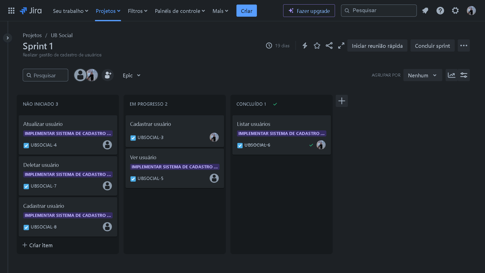
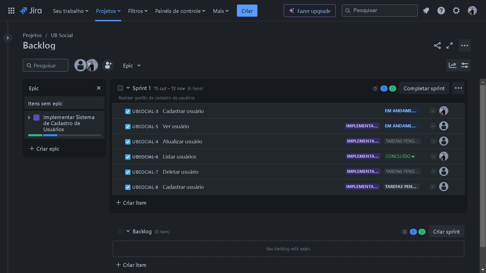
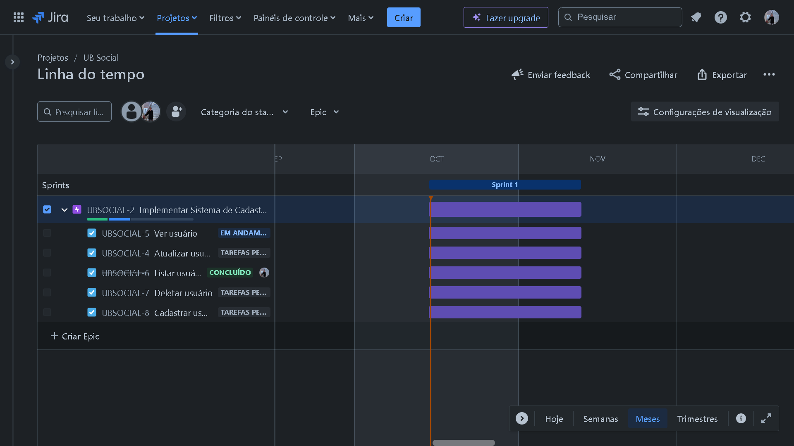
Trello
Ferramenta online para gestão de projetos onde o Scrum se encaixa. Através dele pode-se desenvolver quadros como Scrum Board (imagem 1), quadro Kanban e quatro 7 dimensões do produto (imagem 2).
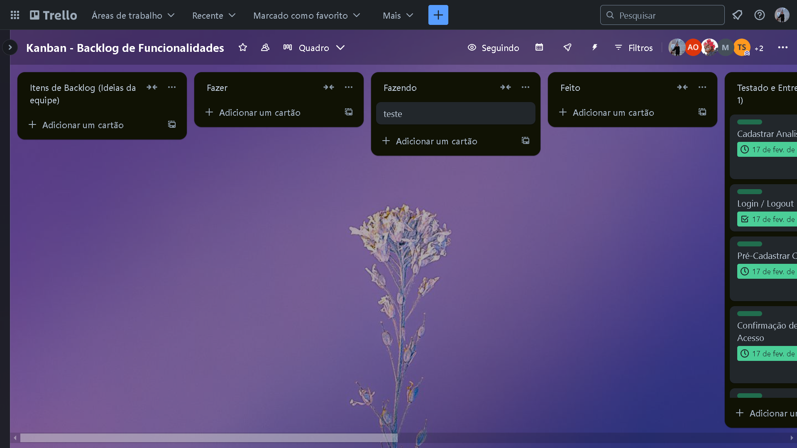
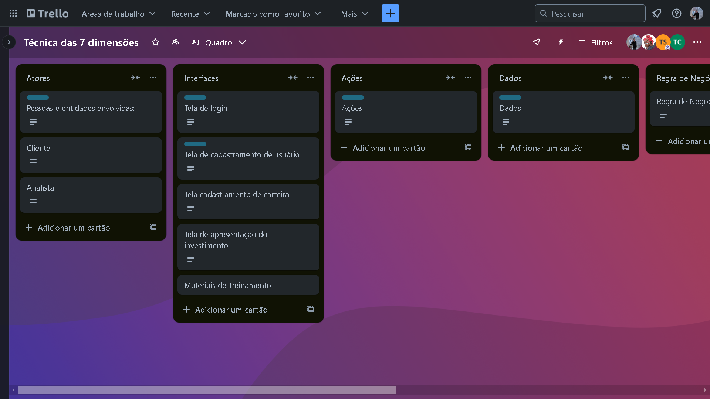
Glossário ágil
- Acceptance Criteria: Características do produto, especificadas pelo Product Owner, que precisam ser satisfeitas antes de serem aceitas pelo usuário, cliente ou outra entidade autorizada. Usadas como padrões para medir e comparar as características do produto final com as características especificadas;
- Acceptance Test Driven Development (ATDD): Desenvolvimento Orientado a Testes de Aceitação envolve stakeholders, colaborando para escrever testes de aceitação antes da implementação da funcionalidade correspondente;
- Acceptance Test/Testing: Teste de aceitação é descrição formal do comportamento de produto de software, geralmente via exemplo ou cenário de uso, através de série de notações e abordagens diferentes propostas para tais;
- Accuracy: Grau em que valor medido está muito próximo do valor real (PMI);
- Acquire Project Team: Processo de confirmar e garantir equipe necessária para concluir projeto. Habilidade, experiência e disponibilidade de recursos são parâmetros importantes considerados ao adquirir equipe do projeto;
- Adaptability: Característica desejável em pessoa, equipe, processo ou sistema medida na habilidade/capacidade de se adaptar ou ser adaptado. No contexto organizacional, refere-se à habilidade de mudar algo ou a si mesmo para se adaptar às mudanças que ocorrem;
- Adaptation: Modificação no produto em desenvolvimento ou processo de desenvolvimento do produto. Variações no valor real e valor verdadeiro desencadeiam necessidade de controle e modificação do produto ou processo;
- Adaptive planning: Metodologias ágeis reduzem desperdício, cortando o trabalho que não agrega valor. Planejar projeto não agrega valor comercial diretamente. Portanto, planejamento em qualquer estágio de projeto Scrum deve ser o mais eficiente possível. Planejar com antecedência todo projeto é considerado desperdício, pois projetos ágeis são propensos a alta taxa de mudança. Portanto, planejamento é feito Just in Time (JIT);
- Adaptive Project Management: Processo estruturado e iterativo de gerenciamento que se concentra em menos planejamento inicial, diferentemente dos métodos Waterfall. Cria ambiente bastante adaptável para equipes, onde elas concentram-se apenas nas tarefas imediatas em questão, as concluem e então passam para próximas tarefas. Se houver alguma mudança nos requisitos, elas serão incorporadas ao próximo Sprint. Isso garante que você esteja no caminho certo com o cenário de mercado e tecnologia em rápida mudança, permitindo entrega de maior valor no menor tempo possível para seus clientes;
- Additional Risk Response Planning: Feito para cuidar de riscos que não foram identificados inicialmente ou quando o impacto de risco nos objetivos é maior do que o esperado. Planejamento de resposta a riscos existente pode não ser suficiente para controlar o risco;
- Agile: Grupo de métodos de desenvolvimento de software iterativos e incrementais. Ele incentiva a flexibilidade e velocidade na resposta à mudança. Requer colaboração entre equipes auto-organizadas e multifuncionais para gerar requisitos e soluções;
- Agile Unified Process:: Refinamento do "IBM Rational Unified Process (RUP)" descrito pela primeira vez por Craig Larman em 2001. Conceitos e técnicas ágeis são usados para selecionar elementos do RUP. Iterações são classificadas em dois tipos: Desenvolvimento e Release;
- All-Before-Any: Processo de desenvolvimento sequencial no qual a saída da etapa anterior é usada como entrada para próxima etapa do processo, usando tamanho de lote de 100%;
- AntiPattern: Antipadrões são soluções comuns para problemas em que a solução é ineficaz e pode resultar em consequências indesejáveis;
- Approach: Método usado, ou etapas tomadas, na definição de tarefa ou problema pela equipe Scrum. A abordagem difere de equipe para equipe;
- Artifact: Qualquer subproduto concreto formado durante o ciclo de desenvolvimento. Exemplos de artefatos incluem o Product Backlog e Sprint Backlog;
- Assumptions: Fatores que, para fins de planejamento, são considerados verdadeiros, reais ou certos;
- Assumptions Analysis: Exercício de gerenciamento de projeto que explora validade de suposições que foram feitas no início do projeto para identificar qualquer risco potencial do projeto concebido e desenvolvido devido à imprecisão de qualquer suposição. Também identifica riscos devido a qualquer instabilidade, inconsistência ou incompletude de suposições;
- Automated Build: Build refere-se ao processo que converte arquivos e outros ativos sob responsabilidade dos desenvolvedores em produto de software em sua forma final/consumível. A construção é automatizada quando essas etapas são repetíveis, não requerem intervenção humana direta e podem ser executadas a qualquer momento, sem nenhuma informação, além daquela armazenada no repositório de controle do código-fonte;
- Backlog Refinement: Preparação do backlog ocorre quando o proprietário do produto e equipe refinam o backlog regularmente, para garantir que o backlog contenha os itens apropriados e priorizados, e que os itens no topo do backlog estão prontos para entrega;
- Basic Unified Process (BUP): Variação mais simples do Rational Unified Process (RUP) desenvolvido em 2005, otimizado para pequenos projetos pela IBM;
- Behavior Driven Development (BDD): Prática onde os membros da equipe discutem comportamento esperado de um sistema, a fim de construir entendimento compartilhado da funcionalidade esperada;
-
Burn down/up Chart: Gráficos de burndown e de burnup rastreiam quantidade de resultados (em horas, pontos da história ou itens do backlog) que uma equipe concluiu em uma iteração ou projeto;
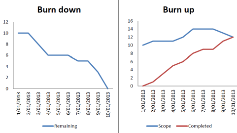
- Business Agility: Agilidade nos negócios é a capacidade de uma organização de sentir mudanças internas/externas e responder de acordo, a fim de agregar valor aos clientes;
- Buyer-Seller relationship: Em ambiente de projeto comercial, vendedor pode ser qualquer entidade (subcontratado, fornecedor ou fornecedor) que gerencia o trabalho do projeto ou entrega o produto do projeto, e comprador é o cliente que terceiriza trabalho para vendedor;
- Brainstorming: Atividade de grupo ou técnica de criatividade que pode ser usada para gerar e analisar ideias ou identificar problemas, riscos ou até mesmo determinar soluções para problemas;
- Cadence: Abordagem para atingir comprometimento e confiabilidade com sistema. Medida de equilíbrio e fluxo rítmico do processo. Sprints de intervalo de tempo regular ou duração estabelecem cadência para esforço de desenvolvimento;
- Capability Maturity Model Integration (CMMI): Conjunto de produtos de melhoria de processos. Desenvolvido pelo projeto CMMI como esforço colaborativo da indústria, governo e acadêmico, que combinou as melhores práticas para desenvolvimento de software. Muito eficaz para projetos que envolvem processos definidos;
- Capacity: Definida pela quantidade de trabalho que pode ser realizado dentro dos recursos disponíveis;
- Ceremony: Ato formal ou conjunto de atos realizados conforme prescrito por ritual ou costume. Atividades essenciais do Scrum, comospring planning, daily scrum, sprint review e sprint retrospective são chamadas de cerimônia pela equipe Scrum;
- Chaotic Domain: Estado de crise que precisa ser imediatamente abordado para evitar mais danos ou perdas, e restabelecer a ordem, exigindo resposta rápida;
- Chickens and Pigs: Fábula usada no Agile Project Management para definir tipo de papel que participante pode desempenhar no Scrum. Deriva da fábula de galinha e porco que planejaram abrir restaurante juntos. Ambos estão envolvidos, mas apenas os porcos estão comprometidos. Porcos têm que concluir o projeto conforme requisitos;
- Chief Product Owner: Pessoa responsável pelo Product Backlog no desenvolvimento do produto, com várias equipes Scrum;
- Chrysler Comprehensive Compensation System Project (C3): Projeto para ter único sistema de folha de pagamento para todos na Chrysler. Projeto foi executado de 1993 até que DaimlerChrysler (depois que Chrysler foi comprada) interrompeu o projeto C3 em 1º de fevereiro de 2000. Muitas técnicas de desenvolvimento de software Agile foram desenvolvidas durante este projeto; a principal delas foi Extreme Programming (XP);
- Code Refactoring: Técnica usada no desenvolvimento de software para reestruturar/redesenhar corpo de código existente, sem alterar seu comportamento. Propósito da refatoração é melhorar atributos não funcionais do software, por exemplo, gerenciar dívida técnica ou tornar codificação mais rápida;
- Collect Requirements: Processo de definição e documentação das necessidades dos stakeholders para atender aos objetivos do projeto;
- Collective accountability: Em projeto Scrum, toda equipe é coletivamente responsável por garantir que trabalho acordado para Sprint seja concluído em tempo hábil;
- Collective Ownership: Propriedade coletiva do código é convenção explícita de que cada membro da equipe pode fazer alterações em qualquer arquivo de código conforme necessário: seja para completar uma tarefa de desenvolvimento, para reparar um defeito ou para melhorar a estrutura geral do código;
- Commitment: Escolha consciente de fazer algo. Vincular-se ou obrigar-se a causa, pessoa ou ação, como por promessa ou garantia;
- Communications Technology: Tecnologias ou métodos para transferir informações entre stakeholders;
- Complex Adaptive System: Numerosas entidades governadas por regras comuns simples e localizadas, que interagem entre si de várias maneiras e recebem feedback constante;
- Complex Domain: Domínio na estrutura Cynefin, onde situação é imprevisível e correção da resposta só é conhecida em retrospectiva;
- Component Team: Equipes especializadas organizadas em torno da arquitetura do produto em desenvolvimento. Equipe que se concentra na criação de um ou mais componentes de produto maior que cliente compraria. Equipes de componentes criam ativos ou componentes reutilizados por outras equipes para montar soluções valiosas ao cliente;
- Conditions of Satisfaction: Critérios de aceitação especificados pelo product owner, que determinam comportamento desejado do produto a ser aceito. Condições sob as quais o product owner está satisfeito com resultado de cada item do Product Backlog;
- Continuous Delivery: Entregar produto ou cada recurso do produto aos seus usuários imediatamente após ele ser integrado e testado pelo desenvolvedor;
- Continuous Deployment (CD): Implantação contínua visa reduzir tempo decorrido entre escrita de linha de código e disponibilização desse código aos usuários em produção. Para alcançar a implantação contínua, a equipe conta com uma infraestrutura que automatiza e instrumenta diversas etapas que levam à implantação, para que, após cada integração que atenda com sucesso a esses critérios de lançamento, o aplicativo ativo seja atualizado com o novo código;
- Continuous Improvement: Aplicar lições a projetos futuros não agrega valor ao projeto atual. Projetos futuros podem não ser semelhantes a projetos passados. Portanto, Agile visa aprender continuamente durante cada projeto e aplicar lições aprendidas dentro do projeto atual. Várias ferramentas, técnicas, conjuntos de conhecimento e habilidades podem melhorar continuamente projetos Agile - por exemplo, reuniões retrospectivas, compartilhamento de conhecimento, etc;
- Continuous Integration (CI): Integração Contínua é prática de mesclar alterações de código em repositório compartilhado várias vezes ao dia, para lançar uma versão do produto a qualquer momento. Isto requer procedimento de integração que seja reproduzível e automatizado;
- Cost of Delay: Perda monetária incorrida devido a atraso no trabalho, processo ou cumprimento de metas de produção. Enfatiza que tempo associado ao projeto tem custo financeiro;
- CRC Cards: Cartões Class Responsibility Collaborator são técnica de design orientada a objetos, que as equipes podem usar para discutir o que uma classe deve saber e fazer, e com quais outras classes ela interage;
- Cross Functional Team: Equipe de projeto que tem experiência em diferentes áreas, como designers, desenvolvedores e testadores que têm habilidades necessárias para concluir trabalho de forma eficaz e eficiente;
- Crystal: Família de metodologias Crystal foi desenvolvida por Alistair Cockburn na década de 1990. Metodologias são nomeadas com base em cores e/ou pedras preciosas para indicar "peso" da metodologia necessária (conforme atributos da equipe ou necessidades estratégicas). A mais famosa também é mais leve, chamada "Crystal Clear", usada para pequenas equipes com membros co-localizados trabalhando em tarefas não críticas. Família se concentra na eficiência e habitabilidade como constituintes da segurança do projeto;
- Customer Development: Desenvolvimento do cliente é estrutura de 4 etapas, originalmente identificada por Steve Blank, para descobrir e validar que você identificou uma(s) necessidade(s) que os clientes criaram o produto certo para satisfazer [...];
- Daily Meeting / Daily Stand-Up / Scrum Meeting: Reunião diária é técnica Agile mai praticada, apresentando oportunidade para equipe se reunir regularmente para coordenar suas atividades;
- Defined Process: Processo bem definido que produz mesma saída para mesma entrada todas vezes (menos as pequenas variações dentro do intervalo). Entradas, saídas e etapas envolvidas são claramente declaradas em tal processo;
- Defined Process Control: Abordagem de controle de processo usada para processos definidos. Este modelo envolve principalmente criação e manutenção de processos que produzem saída esperada;
- Definition of Done: Definição de concluído é lista acordada das atividades consideradas necessárias para levar um incremento de produto, geralmente representado por uma história de usuário, a estado concluído ao final de um sprint;
- Definition of Ready: Definição de pronto envolve criação de critérios claros que uma história de usuário deve atender antes de ser aceita em uma próxima iteração. Isso normalmente é baseado na matriz INVEST;
- Delphi Method: Método de estimativa/pesquisa no qual estimativas e opiniões são coletadas anonimamente de painel, reduzindo viés que pode surgir devido ao poder/influência de certos membros do painel;
- Development Team: Formada com membros de diferentes áreas de expertise funcional. Ela precisa ser auto-organizada e deve se direcionar para único objetivo. Essa equipe é coletivamente responsável pelo desenvolvimento de produto aceitável;
- Disorder Domain: Domínio na estrutura Cynefin. Estágio perigoso, e prioridade deve ser sair deste domínio, pois não entendemos ou não conseguimos dar sentido à situação em que estamos;
- Dot Voting: Técnica usada para identificar itens com maior prioridade. Participantes têm que votar colocando ponto colorido em item entre listados, e item com mais pontos é considerado de maior prioridade. Esta técnica é frequentemente usada durante Sprint Retrospective;
- Economic Filter: Usado como critério de tomada de decisão pela organização para avaliar benefícios econômicos do projeto em consideração e se deve financiá-lo ou não;
- Empirical Process Control: Abordagem de controle de processo usada quando processos são definidos de forma incompleta e saída é única. Este modelo alavanca inspeção frequente, adaptação e transparência. Scrum permite controle de processo empírico para gerenciamento de projetos;
- End Uncertainty: Incerteza em torno das propriedades da entrega final de projeto ou processo;
- Epic: Grande user story ("pai de user stories"), grande entrega, que pode ser dividida em stories menores. Usadas para capturar grande pedaço de funcionalidade ou objetivo maior que não pode ser concluído numa única Sprint. Geralmente criados no product backlog. Exemplo, Título: Processo de Pagamento para Compras Online; Descrição: Como um usuário da plataforma, eu quero realizar o pagamento de minhas compras de maneira fácil e segura para finalizar meu pedido sem dificuldades;
- Essential Unified Process: Método Ágil originado do Rational Unified Process (RUP), Capability Maturity Model Integration (CMMI) e processos ágeis. Usado principalmente para desenvolvimento de software, foi desenvolvido por Ivar Jacobson, um dos contribuidores originais do RUP, como melhoria no Rational Unified Process. Centrado na prática, em vez de focado em processos/funções. Baseia-se na Separação de Preocupações, princípio de separar produto em seções separadas, cada uma abordando uma preocupação separada;
- Estimation: Cálculo aproximado do número, quantidade ou tamanho dos itens do Product Backlog, itens do backlog do portfólio e tarefas do Sprint Backlog;
-
Event Timeline: Técnica usada durante Sprint Retrospective, que envolve representação cronológica de eventos que ocorreram ao longo de período de tempo;
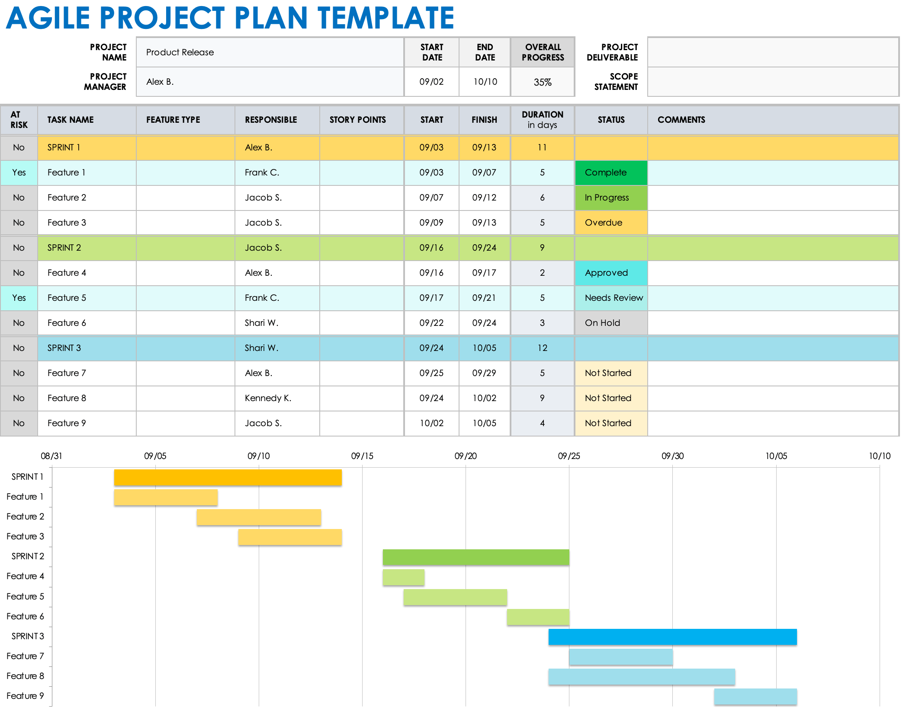
- Expert Judgment: Julgamento fornecido por especialista(s) em área específica sobre assuntos ou atividades sendo realizadas naquela área. Especialista pode ser pessoa ou grupo com treinamento ou educação especializada, conhecimento e habilidade. Expertise pode ser adquirida com tempo e experiência;
- Feasibility study: Estudo de viabilidade, análise detalhada realizada antes de iniciar projeto, com objetivo avaliar viabilidade do projeto em termos técnicos, econômicos, legais e operacionais. Etapa crucial para garantir sucesso e sustentabilidade do projeto a longo prazo;
- Forecasting: Estimar ou prever status e progresso futuros do projeto, com base no conhecimento e nas informações disponíveis no momento da previsão;
- Functional Test: Descreve o que sistema faz. Funções são testadas alimentando entrada e examinando saída. É um tipo de 'Teste de Caixa Preta' onde não considera-se estrutura interna do programa e principalmente comparam-se saídas reais e esperadas;
- Genchi Genbutsu: Em japonês, significa "vá e veja por si mesmo". Convicção de que experiência em tempo real é mais útil do que teoria. É preciso ver problema para entendê-lo, em vez de ouvir sobre problema de outra pessoa. Isso ajudará a tomar decisão informada sobre solução;
- Group Decision Making Techniques: Usado para gerar, classificar e priorizar requisitos de produtos. Alguns métodos usado para chegar decisões de grupo são: unanimidade, maioria, pluralidade e ditadura;
- Impediment: Fator que está causando obstáculo ou bloqueio na execução do scrum de forma eficaz em equipe ou organização;
- Impediment Log: Captura ou registra impedimentos, descrição dos impedimentos, impactos dos impedimentos, solução, se houver, e status dos impedimentos. Formato pode variar. Recomendado que Scrum Master atualize log após cada Daily Stand-up;
- Incremental Funding: Financiar parte do desenvolvimento do produto sem se comprometer a financiar tudo. Com financiamento incremental, apenas pequena parte do esforço de desenvolvimento é financiada, após que decisão de financiamento é criticamente avaliada para ver o que está sendo pago para obter dessa pequena parte;
- Information Radiator: Exibição visual que apresenta informações suficientemente detalhadas, atualizadas e importantes para transeuntes, em formato de fácil autointerpretação;
- Innovation Accounting: Processo matematicamente intenso de definir, medir e comunicar melhorias em inovação. Esta estrutura tenta identificar razões para diferenças em produção inovadora entre equipes em diferentes períodos de tempo. Comumente usado como métrica para medir progresso de startups;
- Innovation Waste: Oportunidade perdida de criar solução inovadora. Geralmente ocorre quando solução prescrita é fornecida com item do Product Backlog;
- Integration: Combinação de vários componentes de produto para formar produto de trabalho coerente e de escopo maior, que pode ser validado para funcionar corretamente como todo;
- Internal Stakeholders: Stakeholders internos à organização, ou seja, que estão envolvidos no desenvolvimento do produto. Exemplo, executivos seniores, gerentes e usuários internos;
- Interviews: Abordagem formal ou informal para obter informações das partes interessadas falando diretamente com elas;
- Iterative Product Development: No desenvolvimento iterativo de produtos, produto final é desenvolvido ao longo de algumas iterações e entregue ao cliente;
-
Kanban: Significa "placa" em japonês. Taiichi Ohno adaptou palavra usada para placas de loja para descrever seguinte filosofia: Processo de down steam deve ir e buscar o que precisa - semelhante a como vamos e buscamos o que precisamos em loja. Abaixo, exemplo de Kanban board;
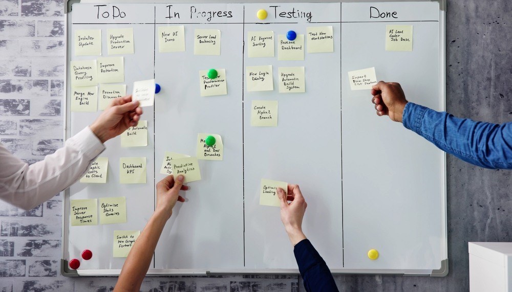
- Kano Model: Nomeado em homenagem a Noriaki Kano, professor japonês, Modelo Kano é usado para mapear o que é valorizado pelo cliente, classificando atributos do produto em categorias básicas, de desempenho e excitação. Pode ser usado para determinar produto minimamente viável que cliente sentirá que satisfaz seus requisitos básicos;
- Known Technical Debt: Categoria de status para dívida técnica que representa dívida que é conhecida pela equipe de desenvolvimento e foi tornada visível para consideração futura. Contraste com "dívida técnica ocorrida" e "dívida técnica direcionada";
- Lean: Lean Manufacturing ou simplesmente Lean foca na remoção de desperdícios da produção. Prática para entregar mais ou mesmo valor com menos recursos, eliminando desperdícios em organizações e processos de negócios. Lean considera elemento ou atividade como 'Desperdício' se o mesmo for usado para propósitos diferentes de criar valor aos clientes;
- Lean Product Development (LPD): Aplicação dos Princípios Lean ao desenvolvimento de produtos. É um dos métodos Agile iniciais;
- Lifecycle Profits: 1. Potencial de lucro total de produto ao longo da vida útil. 2. Potencial de lucro total de todo portfólio em vez de único produto;
- Means Uncertainty: Incerteza em torno dos meios pelos quais produto será criado;
- Minimum Marketable Features (MMFs): Menor ou mínimo conjunto de funcionalidades relacionadas a recurso que deve ser entregue para que cliente perceba valor (para que seja comercializável). Contraste com "recursos mínimos liberáveis";
- Minimum Viable Product (MVP): Produto com apenas aqueles recursos mínimos que permitem que ele seja implantado, e nada mais. Normalmente, MVP é resultado do primeiro Sprint;
-
MoSCoW: Técnica usada para categorizar importância de diferentes atributos em produto do ponto de vista do Cliente, para permitir que equipe de desenvolvimento coloque importância na entrega de cada requisito. Este ensinamento é útil para definir 'Critérios de Aceitação' de produto, especificando requisitos 'Must Have, Should Have, Could Have e Won't Have';
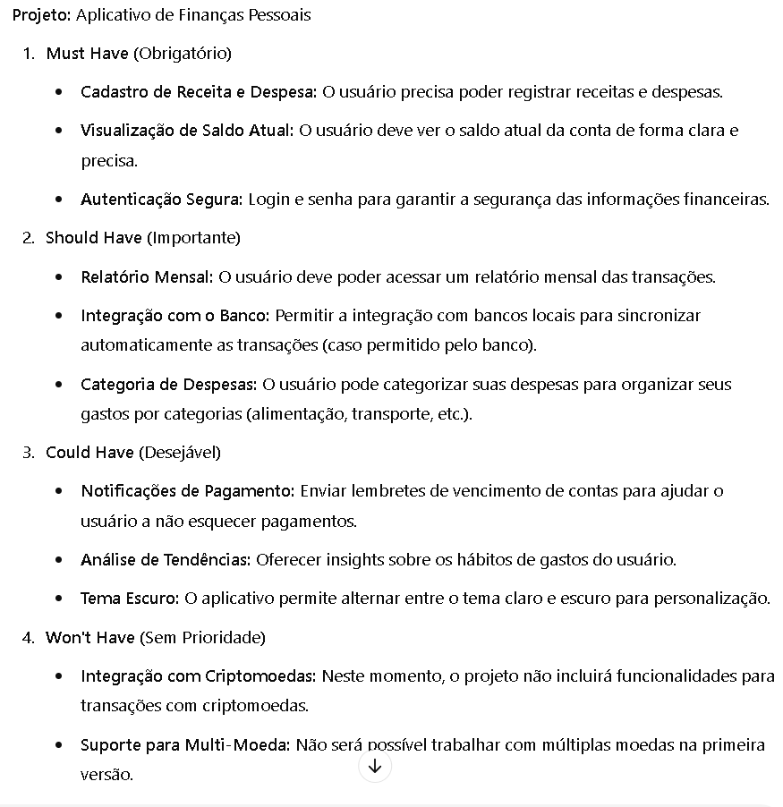
- Muda: Termo japonês usado para se referir a qualquer atividade de desperdício que não tem valor. Fator essencial no Kanban. Para administrar negócio, organização tem que produzir bens ou fornecer serviços para cliente comprar ou pagar. Isso requer processo, e esse processo faz uso de recursos. Fator desperdício entra em cena quando recursos são consumidos desnecessariamente. Abordagem Kanban aumenta conscientização sobre consumo de recursos de desperdício e ajuda identificar desperdícios, perspectivas e oportunidades inexploradas;
- Mura: Em japonês, termo significa irregularidade ou inconsistência na matéria física ou na condição espiritual humana. Em Kanban, Mura é reduzido equipando processo com parte exata, no momento exato, na quantidade exata;
- Muri: Termo japonês usado para sobrecarga, irracionalidade ou absurdo. Kanban evita Muri por meio de trabalho padronizado. Primeiro, saída padrão é definida para que possa haver julgamento efetivo de qualidade. Então, elementos em cada processo são simplificados para exame e recombinação. Processo é então padronizado para obter condição padrão;
- Must-have Features: Conjunto de recursos que devem estar presentes na próxima versão para que ela seja viável;
- Nice-to-have Features: Recursos considerados "bons de ter" em versão futura, mas podem ser deixados de fora se houver escassez de fundos para concluir projeto;
- Objective Definition: Faz parte de Sprint Planning Meeting, onde Product Owner explica itens priorizados no Product Backlog e equipe se compromete com itens do Product Backlog a serem concluídos durante Sprint;
- Open Unified Process: Framework de processo de código aberto desenvolvido pela Eclipse Foundation a partir do Basic Unified Process (BUP) da IBM. Princípios básicos são: ciclo de vida iterativo, colaboração, gerenciamento de requisitos e conhecimento da arquitetura;
- Organization Chart: Gráficos usados para mostrar posições e relacionamentos em formato gráfico;
- Pair Programming: Técnica de programação na qual 2 programadores trabalham juntos em único sistema. Muitos estudos mostraram que programadores em pares são 2 vezes mais eficientes; na produção de código e especialmente na ausência de bugs, do que único programador em único sistema;
- Plan Risk Management: Processo de definição de como conduzir atividades de gerenciamento de risco para projeto;
-
Planning Poker: Prática de estimativa ágil, variação do método Delphi de banda larga de estimativa baseada em consenso. Usada para estimar esforço ou tamanho relativo de histórias de usuário, atribuindo pontos de história a cada história de usuário. Também pode ser usada para reuniões, onde equipe estima risco em diferentes módulos;
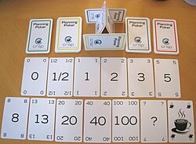
- Point Inflation: Fenômeno infeliz de inflar valor das estimativas do tamanho do backlog do produto em tentativa de se adequar ou otimizar medida concebida de forma imprudente (como atingir velocidade alvo);
-
Portfolio Backlog: Nível mais alto de backlog no framework Agile; composto por produtos, programas, projetos ou Epics de alto nível;
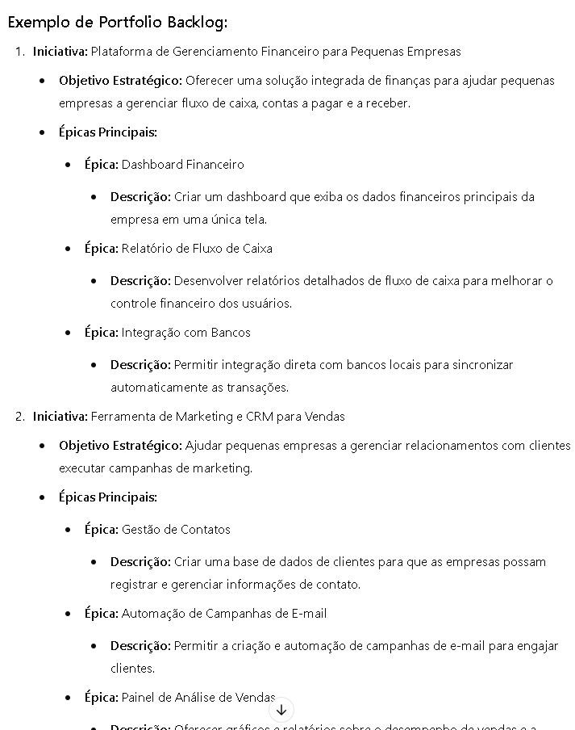
- Practice: Sessões programadas com propósito de ensaio e melhoria de desempenho são chamadas de prática. Exemplo, princípio de demonstrar progresso é apoiado pela prática de Sprint Review do Scrum;
- Precision: Grau pelo qual valores de medições repetidas são agrupados e têm pouca dispersão (PMI);
- Prevention vs Inspections: Prevenção é atividade que pode reduzir probabilidade de consequências negativas associadas aos riscos do projeto, enquanto medidas de inspeção verificam se atividade, componente, produto ou serviço está em conformidade com requisitos especificados. Custo de prevenção de erros é muito menor do que custo de correção dos erros encontrados durante inspeção;
- Principle of Least Astonishment: Agir ou desenvolver produtos de trabalho de forma que seja menos provável de surpreender usuários;
- Prioritization: Processo de ordenar lista, conforme determinado atributo;
- Prioritized Delivery: Scrum acredita em entregar maior quantidade de valor no menor tempo possível. Isso requer entrega priorizada na qual "o que será feito" tem que ser escolhido entre "o que tem que ser feito" conforme valor do negócio;
- Product Backlog: Lista priorizada de trabalho a ser executado em projeto. No Scrum, isso evolui com necessidade do negócio e ambiente;
- Product Backlog Grooming: Filtragem de tarefas no Product Backlog com base em importância, conforme critérios definidos pelo proprietário do produto;
- Product Backlog Item (PBI): Item como recurso ou benefício que é valioso para processo de desenvolvimento do produto;
- Product Description: Documentação de características do produto ou entrega que projeto está realizando para criar;
- Product Development Effort: Todo escopo do esforço empregado para criar ou aprimorar produto ou serviço;
- Product Owner (PO): Líder da equipe de desenvolvimento de produto. Voz da comunidade de stakeholders para equipe scrum. Dono do produto define o que fazer e em que ordem fazê-lo;
- Product Owner Proxy: Pessoa autorizada pelo proprietário do produto a agir em seu nome em situações particulares;
- Product Roadmap: Plano de alto nível que mostra quando no futuro novos produtos devem ser desenvolvidos ou introduzidos pela organização/equipe. Solicitações para editar roteiro (geralmente adicionando novos produtos) vêm da força de vendas ou da gerência sênior da empresa quando estratégia de marketing é feita;
- Product Scope: Características ou serviços que caracterizam produto, resultado ou serviço;
- Product Vision: Declaração descrevendo estado futuro desejado que seria alcançado pelo desenvolvimento e implantação de produto. Boa Product Vision é declaração simples, fácil de entender e fornece direção coerente para pessoas que são solicitadas a realizá-la;
- Progressive Refinement: Dividir, organizadamente, grandes itens do Product Backlog levemente detalhados em conjunto de itens menores e mais detalhados;
- Project Chartering: Conjunto de trabalho inicial necessário para definir projeto em nível específico de detalhes para que decisão de financiamento possa ser tomada;
- Project Closeout: Processos e procedimentos desenvolvidos para encerramento ou cancelamento de projetos;
- Project Records: Pode incluir correspondência, memorandos, atas de reuniões e documentos que descrevem projeto;
- Quality: Grau em que conjunto de características inerentes atende aos requisitos (adequação à finalidade);
- Quality Metrics: Descreve, em termos específicos, atributo de projeto ou produto e como ele é medido pelo processo de controle de qualidade;
- Queue: Termo adaptado de Lean Manufacturing. Inventário de itens que aguardam próxima ação no fluxo de trabalho;
- Rapid Application Development (RAD): Processo de desenvolvimento de software nomeado e introduzido em 1991. Prioriza desenvolvimento mais rápido e facilitação da manutenção do aplicativo em relação à funcionalidade e desempenho;
-
Rational Unified Process (RUP): Combinação de modelos de desenvolvimento de software criados em 1996 na Rational Software Corporation. Estrutura de processo; onde blocos de construção individuais podem ser escolhidos e adaptados para se adequar ao projeto em questão. Objetivo era dar vantagens dos modelos de desenvolvimento de aplicativos rápidos e em cascata;
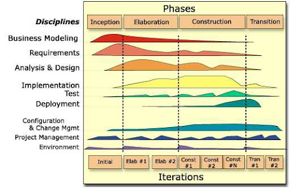
- Recruitment Practices: Políticas, diretrizes ou procedimentos que regem recrutamento de pessoal;
- Release Planning: Termo emprestado do Lean Manufacturing. Função do planejamento de liberação é sincronizar intervalo projetado de datas de entrega potenciais no futuro com tarefas a serem feitas hoje;
- Release Train: Técnica de planejamento de lançamentos de produtos em períodos de tempo regulares ou cíclicos. Tornada famosa pela Cisco por sua plataforma de software IOS, cada lançamento é então decomposto em vários projetos para Produtos Múltiplos;
- Risk Avoidance: Uma das respostas de risco planejadas em que tentamos evitar risco completamente alterando algum aspecto do projeto;
- Role: Conjunto bem definido de responsabilidades que podem ser cumpridas por 1 ou mais pessoas e pelas quais elas são responsáveis. 3 funções do Scrum são Product Owner, Scrum Master e equipe de desenvolvimento;
- Rule: Prática comum ou método de ação geralmente prescrito em situação particular. Regra pode ser quebrada quando necessidade de situação dita que desvio do curso normal de ação é necessário. Scrum inclui regras;
- Scrum: Metodologia originalmente refinada em 1995 por Ken Schwaber e Jeff Sutherland a partir do trabalho feito por Hirotaka Takeuchi e Ikujiro Nonaka. Nomeada em homenagem ao SCRUM em Rugby, esta é estrutura Agile mais reconhecida. Metodologia iterativa que trata grandes porções do desenvolvimento como caixa preta controlada. Iterações chamadas Sprints são usadas para evoluir produto que está pronto para ser enviado após cada Sprint;
- Scrum Board: Usado para planejar e rastrear progresso durante Sprint, geralmente contém 3 colunas para indicar progresso das tarefas (tasks) estimadas para Sprint: coluna To Do para tarefas ainda não iniciadas, coluna Work in Progress para tarefas iniciadas, mas não concluídas, e coluna Done para tarefas concluídas. Scrum Board também contém gráfico Sprint burn down e espaço para itens inesperados;
- Scrum Framework: Conjunto de princípios, valores, práticas e regras que formam base para desenvolvimento baseado em Scrum;
- Scrum Master: Um dos 3 papéis Core/Pig em equipe Scrum. Scrum Master facilita Scrum e é responsável por remover obstáculos; permitindo assim que equipe entregue meta/entregável do Sprint;
- Scrum of Scrum: Análogo ao Daily Scrum. Esta reunião é facilitada pelo Chief Scrum Master e geralmente conduzida em grandes projetos onde várias equipes Scrum trabalham em sincronia para garantir progresso do projeto;
- Scrum Roles: Existem 3 papéis principais no Scrum: Product Owner, Scrum Master e equipe Scrum (também chamada de equipe de desenvolvimento). Essas são as pessoas responsáveis por concluir objetivos do projeto;
- Scrum Team: Composta por 1 Product Owner, 1 Scrum Master e 1 equipe de desenvolvimento, responsáveis pela entrega pontual e de alta qualidade dos compromissos do Sprint;
- Self-Organized: Equipe ou grupo de pessoas que administra a si mesmas, seu tempo e recursos é considerado auto-organizado;
- Seven Product Dimensions: Técnica para levantamento de requisitos funcionais, analisando 7 dimensões do produto. Geralmente implementada em quadros como Kanban, no product backlog ou sprint backlog, para gerar epics e user stories. 1.Atores (user/personas, usuários que interagem com o produto. Ex: usuário confeiteiro para site de receitas). 2.Interfaces (telas, fluxos ou aplicações a ser construídas para atender o requisito. Ex: interface gráfica com listagem de receitas). 3.Ações (verbos, ações que usuários desejam fazer ao interagir com aplicação. Ex: acessar passo a passo de receita específica). 4.Dados (inputs, entradas fundamentais para funcionamento da aplicação. Ex: nome do confeiteiro, receita pdf). 5.Regra de Negócio (regras para suportar necessidades do negócio/aplicação. Ex: receitas precisam ser atualizadas de 1 ano). 6.Ambiente (plataformas onde aplicação será utilizada. Ex: aplicação web). 7.Qualidade (restrições ou controle de qualidade, requisitos que precisam ser contemplados na aplicação, para atender necessidades dos usuários. Ex: o passo a passo da receita poderá ser acessado offline). Interfaces, ambiente e qualidade são requisitos não funcionais. Épico final: Como confeiteiro (ator), quero acessar (ação) passo a passo de receita específica online (ambiente). Critérios de aceite: acessar/ler receita (ação), receita com detalhes de passo a passo (regra de negócio), online (ambiente), rapidamente (qualidade), interface gráfica para leitura de receita (interface);
- Sprint Demo: Atividade de Sprint Review onde itens do Product Backlog que são concluídos serão demonstrados. Intenção é encorajar discussão rica em informações entre equipe Scrum e outros participantes da Sprint Review;
- Sprint Goal: É o que deve ser realizado até final do Sprint. Resumo das atividades/resultados elaborados pelos itens do Product Backlog que Product Owner gostaria de realizar durante o Sprint;
- Sprint Planning Meeting: Acontece no início de cada Sprint. Objetivo da reunião é definir objetivos e tarefas (tasks);
- Sprint Retrospective: Revisão e análise feita no final de cada Sprint. Objetivo é melhorar desempenho do time Scrum e adotar melhores práticas;
- Sprint Review: Acontece no final de cada Sprint. Equipe de entrega mostra o que eles realizaram durante Sprint. Atributos da atividade são revisados, modificados e reconciliados em cada reunião de Sprint Review;
- Staffing Pool: Características dos possíveis funcionários que estão disponíveis para se juntar a equipe;
- Staffing Requirements: Define que tipos de competências são exigidas de que tipo de indivíduos ou grupos e em que prazos;
- Stakeholder: Qualquer pessoa ou entidade que pode afetar empreendimento/projeto, ou ser afetada por ele, ou ser percebida como afetada;
- Statistical Sampling: Amostragem que envolve escolha de parte de população de interesse para inspeção;
- Status Review Meetings: Reuniões programadas regularmente para trocar e analisar informações sobre status do projeto e desempenho;
- Story Point: Medida abstrata do esforço para implementar story é chamada de story point. Normalmente determinado pelo envolvimento no planning poker;
- Sustainable Pace: Ritmo apropriadamente agressivo no qual equipe trabalha para produzir bom fluxo de valor comercial por longo período de tempo sem se esgotar;
- Synchronization: Coordenação de eventos para operar sistema em uníssono. Frequentemente usada para garantir que várias equipes Scrum trabalhem juntas de forma coordenada, iniciando e encerrando seus Sprints nos mesmos dias;
- System or Process Charts: Representação gráfica de processo, mostrando relacionamentos entre várias etapas do processo. Durante planejamento de qualidade, fluxogramas ajudariam equipe do projeto antecipar problemas de qualidade que poderiam ocorrer. Comumente usado em métodos de cascata;
- Task Board: Gráfico/quadro que descreve todo trabalho que equipe está fazendo durante Sprint. Há 5 colunas: "Story", "To Do", "In Progress" e "Done";
- Task Estimation: Equipe divide itens selecionados do Product Backlog em tarefas (tasks) e, em seguida, tarefas são estimadas pelos membros da equipe conforme sua complexidade, risco envolvido, tempo potencial necessário e assim por diante, usando exercícios de equipe;
- Team Building Activities: Atividades especificamente tomadas pela gerência e pelos membros da equipe para ajudar membros individuais da equipe trabalharem juntos de forma eficaz, melhorando assim desempenho da equipe;
- Technique: Procedimento usado para realizar atividade ou tarefa específica. Procedimento definido usado para executar parte ou toda atividade, ou dar suporte a abordagem;
- Timebox: Período de tempo para cada processo e atividade em projeto Scrum;
- Tolerances vs Control limits: Tolerâncias indicam faixa especificada de resultados aceitáveis. Limites de controle são limiares, que indicam se processo está fora de controle;
- Transparency: Cliente está constantemente ciente do progresso do produto e membros da equipe estão cientes das funções e responsabilidades;
- Trend Analysis: Técnica matemática para prever resultados futuros com base em resultados históricos, através de gráficos de execução;
- Triggers: Também chamados de sintomas ou sinais de alerta, são indicações de que evento ocorreu ou está prestes a ocorrer. Comumente usado em Gerenciamento de Riscos;
- Ubiquitous Language: Equipes usam linguagem onipresente para vocabulário de empresa nos requisitos, discussões de design e código-fonte de um produto de software;
- Unit Testing: Teste de unidade é pequeno fragmento de programa que exercita parte restrita do código-fonte do produto e verifica os resultados;
- Usability Testing: Teste de usabilidade é técnica empírica e exploratória para responder perguntas como "como um usuário final responderia ao nosso software em condições realistas?";
- User Stories: Em consulta com cliente ou proprietário do produto, equipe divide trabalho a ser realizado em incrementos funcionais chamados, "histórias de usuários". Toda user story é escrita via template e possui critérios de aceitação (regras requisitadas para user story ser aceita/completada);
- User Story Template: O modelo "função-recurso-motivo" é uma das ajudas mais comumente recomendadas para escrever histórias de usuários: "Como [tipo de usuário], quero [objetivo] para que [benefício]" (ex: "Como cliente, quero poder adicionar produtos ao meu carrinho para que eu possa comprá-los mais tarde", onde critério de aceitação é "O carrinho deve mostrar o nº de itens adicionados"). Exemplo 2: Título: Escolher Método de Pagamento; Descrição: Como um cliente, quero selecionar um método de pagamento entre várias opções (cartão de crédito, boleto, etc.), para escolher o mais conveniente para mim; Critérios de Aceitação: Usuário consegue visualizar diferentes opções de pagamento; Usuário consegue escolher uma das opções e prosseguir com o pagamento;
- Velocity: Velocidade são estimativas de esforço total associadas às histórias de usuários que foram concluídas durante iteração;
- Version Control: Controle de versão é facilitador de série de práticas agile, como integração contínua (CI);
- Voice of Customer (VOC): Product Owner representa stakeholders e é responsável por garantir que equipe entregue valor. PO é responsável por garantir comunicação clara das funcionalidades do produto para equipe Scrum e, portanto, é comumente chamado de Voz do Cliente;
- Wideband Delphi Method: Variação do método Delphi. Aqui, após rodada de coleta de respostas, membros do painel veem dados coletados e originadores de respostas distantes da média são solicitados a justificar sua resposta/estimativa da pesquisa. Isso é seguido por outra rodada de coleta de respostas;
- Won't-have Features: Conjunto de recursos/opções que são especificamente declarados como não disponíveis na próxima versão;
- Work In Progress: Trabalho que foi realizado, mas ainda não concluído. Se grandes segmentos do projeto forem WIP, isso pode representar vários problemas. Identificar gargalos no projeto torna-se difícil quando várias tarefas são WIP ao mesmo tempo. Cada WIP requer capital e não contribui para o ROI até que se torne produto concluído e utilizável. Quadros Kanban são eficazes para colocar limites no WIP.